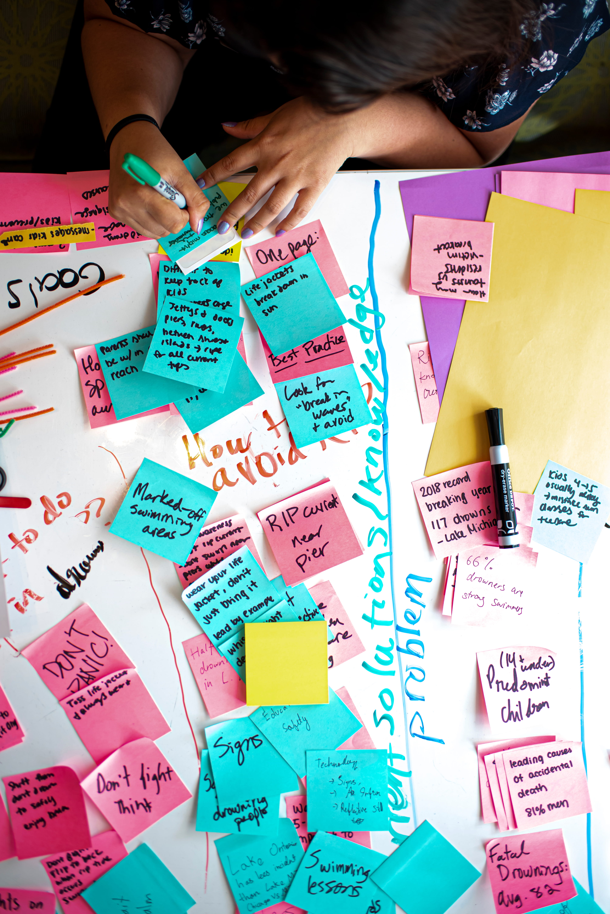

Transform your academic foundation into real-world impact. The UMSI Engaged Learning Office (ELO) guides you through the crucial early stages of project work—from self-reflection and community context to team charters and initial client kickoff.
Why the Work Starts Before the Project
Engaged learning at UMSI is fundamentally different from traditional classroom assignments. You are stepping out of controlled environments and into complex, unscripted ecosystems where technical solutions intersect with human lives, organizational cultures, and real community needs.
The initial phase of a project is rarely about jumping straight into execution—it is about building the foundation for ethical, sustainable engagement. Taking time to reflect on your own positionality, audit your team’s collective skills, and listen deeply to your partner’s goals prevents project failure down the line. When you ground your project in mutual respect, clear boundaries, and honest communication from Day 1, you transform a simple class deliverable into a reciprocal partnership that creates authentic value for everyone involved.
When you are ready, select the step below that most relates to where you are on your journey to learn about useful resources that can help in your learning and decision-making experience!
Before creating a solution, take time to understand the context, evaluate your team's readiness, and identify what you still need to learn.

Approach the Work as a Collaborative Learner
Before writing code, sketching wireframes, or analyzing data, consider how your identity and previous experiences influence the way you understand the project.
Your role is not to enter an organization or community as an outside expert who will fix a problem. Your role is to listen, ask questions, contribute your developing expertise, and work alongside people who understand their organization and community.
Preparation Goals
Develop social and community awareness: Examine your identity, positionality, assumptions, and privileges. Learn about the community's history and consider how power may affect participation and decision-making.
Understand expectations: Review program requirements, project commitments,leadership responsibilities, deadlines, and expected outcomes before beginning the work.
Assess team readiness: Identify each team member's skills, interests, vailability, responsibilities, and learning goals. Determine where the team may need additional knowledge or support.
Begin project scoping: Learn about the organization's needs, intended users, constraints, and desired outcomes before committing to a solution.
Questions to Consider
What do I hope to learn from this experience?
Who will be affected by the project and its outcomes?
What assumptions am I making about the partner, community, or project?
What knowledge and skills does my team already have?
What knowledge or perspectives are missing from our team?
How will the partner participate in project decisions?
What would a mutually beneficial outcome look like?
Recommended Preparation Process
Reflect on your position: Identify the experiences, identities, assumptions, and areas of privilege that may shape your approach.
Learn about the context: Research the organization, community, project history, affected stakeholders, and broader social conditions.
Set learning goals: Record the technical, professional, interpersonal, and ethical skills you want to develop.
Review team capacity:Compare the team's skills and availability with the likely needs of the project.
Identify open questions: Write down what your team needs to learn from the partner before confirming the project's scope, methods, or deliverables.
Establishing professional communication, conducting initial meetings, and finalizing partnership agreements.
Value & Narrative
First impressions shape the trajectory of a partnership. The starting phase is where abstract project ideas turn into structured, professional commitments. By establishing clear team contracts, co-creating agendas, and aligning on project scope early, you build psychological safety within your team and trust with your client. Learning how to navigate early ambiguity is one of the most valuable professional capabilities you will gain at UMSI.
Focus & Objectives
Partner Communication: Draft clear, professional outreach to launch working relationships.
First Meetings: Structure productive kickoff meetings that define roles and project bounds.
Formalizing Agreements: Document team commitments and scope agreements shared by all stakeholders.
📅 SO-ELL Schedule: Overview of key milestones, deadlines, and submission dates.
Phase 3: During Your Experience
Master the art of adaptive project management, human-centered fieldwork, and constructive feedback as you execute your project in real time.
The Value of Navigating Friction & Active Execution
The middle of an engaged learning project is where real growth happens—and where real challenges surface. Real-world projects rarely follow a straight line. Requirements shift, team dynamics evolve, clients face unexpected internal constraints, and research data yields surprising results. The true value of this phase lies in developing resilience, adaptability, and ethical agility. Learning to manage "scope creep," navigate mid-project feedback, and re-align technical decisions with human needs are the exact experiences that distinguish top UMSI graduates. When you view friction not as a barrier, but as a natural part of the applied learning process, you develop the strategic problem-solving skills needed in modern information careers.
The true value of this phase lies in developing resilience, adaptability, and ethical agility. Learning to manage "scope creep," navigate mid-project feedback, and re-align technical decisions with human needs are the exact experiences that distinguish top UMSI graduates. When you view friction not as a barrier, but as a natural part of the applied learning process, you develop the strategic problem-solving skills needed in modern information careers.
Focus & Objectives
Fieldwork & Research Methods: Apply human-centered design tools to observe contexts and extract insights.
Sponsor & Client Updates: Maintain transparency with regular progress reporting.
Feedback Loops: Gather, evaluate, and integrate constructive feedback mid-project.
Next Steps
Great! You've gone through the featured resources to get you prepared, started, and moving through your project.
Visit our resources page to see next steps for when you are close to finishing or offboarding a project. Or check out our Faculty Hub for more information and resources, or request a Custom Workshop.